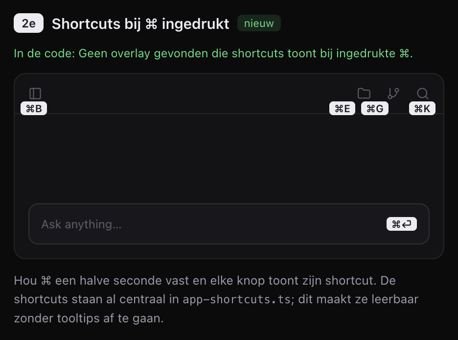
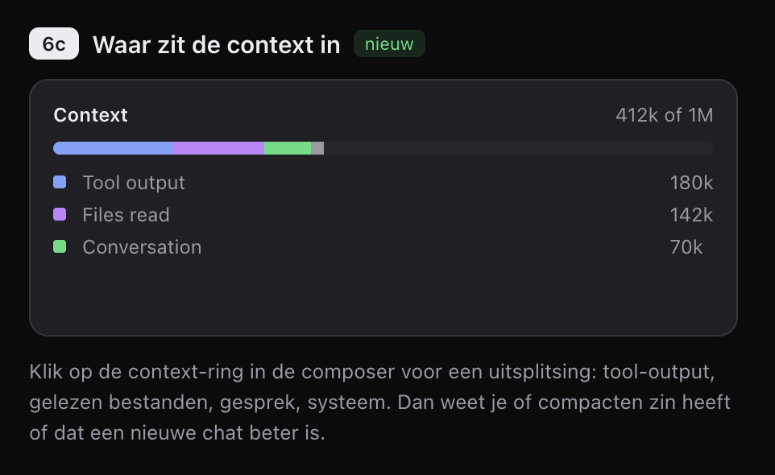
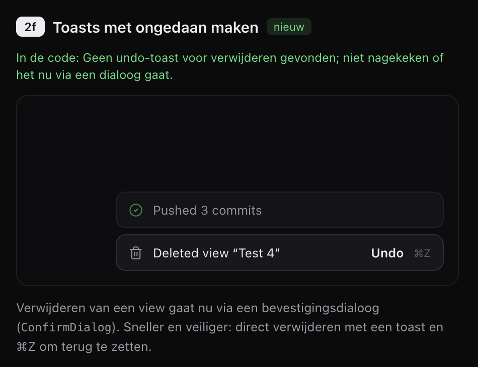
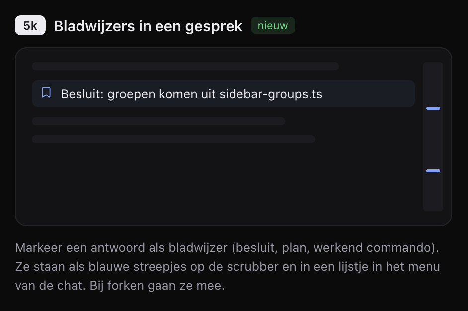
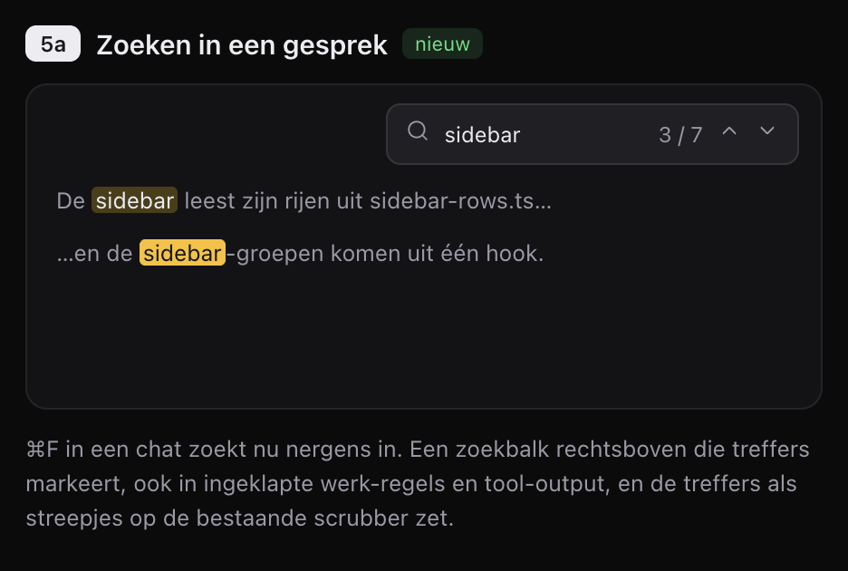

Werkwijze
Bouw de features in de volgorde van dit rapport. De kleinste staan bovenaan, zodat er snel iets af is en de grote wire-wijzigingen later komen. Maak één commit per feature op main, in conventional commits.
- Heb je een vraag die dit rapport niet beantwoordt, stel die dan aan Bas via de vraagtool (AskUserQuestion). Gok niet bij iets wat hij ziet of aanraakt.
- Nooit een
Co-Authored-Byof andere attributie in een commit. Geengit stash,reset,restoreofclean. Bas heeft een stash die moet blijven staan. - De wire krijgt alleen optionele velden, nieuwe requests en nieuwe events. Nooit een nieuw lid van
ChatItemSchema, want de iPhone-app valideertchat.attachin zijn geheel.PROTOCOL_VERSIONblijft staan. - Elke tekst in de UI krijgt Engels en Nederlands in
apps/client/src/i18n. Getallen lopen viaapps/client/src/format. Alleen semantische tokens uitstyles.css, tooltips viaTooltip, iconen viaIcon. - Een nieuw commando krijgt een plek in
shell/menu/model.tsen in de palette. Shortcuts binden één keer opwindow, inshell/app-shortcuts.tsofcanvas/canvas-shortcuts.ts. - Tests naast de code, zonder wall-clock timing.
bun run formatenbun run checkslagen voor elke commit. - De iOS-app valt buiten dit rapport. Nieuwe wire-velden zijn optioneel, dus iOS blijft werken zonder ze te kennen.
Overzicht
| Feature | Grootte | Wire | Daemon | Waar het begint |
|---|---|---|---|---|
| 1. Wachtrij bewerken | Klein | Optioneel resultaatveld | Klein | chat/ui/Composer.tsx |
| 2. Shortcuts bij ⌘ | Klein | Nee | Nee | ui/Tooltip.tsx |
| 3. Hulplijnen met gaps | Klein | Nee | Nee | canvas/alignment-guides.ts |
| 4. Contextmenu's | Klein, daarna open | Nee | Nee | apps/desktop/src/main.ts |
| 5. Waar zit de context in | Middel | Optioneel veld op ChatUsage | Ja | chat/ui/RunSettings.tsx |
| 6. Toasts met undo | Middel | Nee | Checken | actions/client-actions.ts |
| 7. Bladwijzers | Middel | Nieuwe requests en event | Ja | chat/ui/Scrubber.tsx |
| 8. Zoeken | Groot | Nee | Nee | chat/ui/Timeline.tsx, shell/panels |
1. Berichten in de wachtrij bewerken
Stuur je een bericht terwijl de agent bezig is, dan komt het in een wachtrij boven de composer. Daar kun je het nu alleen meteen versturen of weggooien. Een tikfout betekent dus weggooien en opnieuw typen.
Wat er nu is
- De wachtrij staat in
apps/client/src/chat/ui/Composer.tsxrond regel 877. Elk bericht heeft een hover-groep en een contextmenu met Send now en verwijderen. - Verwijderen roept
chat.unqueueaan. De daemon (ChatSession.unqueueinapps/server/src/chat/chat-session.ts) geeftfalseterug als het bericht al weg was, maar de handler inapps/server/src/handlers/chat.tsgooit dat antwoord weg. - Een bericht in de wachtrij (
ChatQueuedMessageSchema) bewaart tekst, mentions, skills en bijlagen.
Wat er verandert
- Een Edit-knop (Lucide
Pencil) in de hover-groep en in het contextmenu. - Edit haalt het bericht uit de wachtrij en zet tekst, mentions, skills en bijlagen terug in de composer. De focus gaat naar de composer.
- De daemon vertelt of het bericht nog op tijd terug was. Geef het bericht terug als optioneel veld op het resultaat van
chat.unqueue, bijvoorbeeld{ message?: ChatQueuedMessage }. Een oude daemon geeft{}en dan doet de client niets. - Was het bericht al verstuurd, dan blijft de composer zoals hij was en meldt een toast dat het al weg is.
- Staat er al een concept in de composer, dan komt het teruggehaalde bericht ervoor, met een lege regel ertussen. Bijlagen worden samengevoegd tot
CHAT_ATTACHMENTS_MAX_COUNT; wat erboven valt, meldt de composer zoals bij een gewone bijlage. - Opnieuw versturen terwijl de agent nog bezig is, zet het bericht achteraan de wachtrij. Het onthoudt zijn oude plek niet.
Klaar als
Een bericht met een mention en een bijlage komt na Edit compleet terug in de composer en verdwijnt uit de wachtrij op elke client. Een bericht dat tijdens de klik verstuurd wordt, laat de composer leeg en toont de toast. Een test op ChatSession dekt beide gevallen.
2. Shortcuts tonen bij ingedrukte ⌘

Wie de shortcuts wil leren, moet nu over elke knop hoveren. Houd je ⌘ een halve seconde vast, dan toont straks elke zichtbare knop zijn shortcut.
Wat er nu is
Tooltip in apps/client/src/ui/Tooltip.tsx heeft een kbd-prop die een Shortcut of een vrije tekst aanneemt. formatShortcut in ui/shortcut.ts schrijft hem uit. Een overlay bestaat nog niet.
Wat er verandert
- Elke
Tooltipmet eenShortcut-object alskbdmeldt zijn trigger aan bij een klein register. Vrije tekst ("Shift skips the cache") doet niet mee. - Hou ⌘ 500 ms vast zonder andere toets, dan tekent een laag boven alles een label onder elke aangemelde knop die zichtbaar is. Dat geldt overal, ook in nodes op het canvas en in panelen.
- Op Windows en Linux doet Ctrl hetzelfde, en de labels staan dan in Ctrl-notatie.
- De labels verdwijnen bij loslaten, bij elke andere toets en bij blur van het window. Een gewone shortcut geeft zo nooit een flits.
- De listener staat één keer op
window. Heeft een browser-node de focus, dan ziet de client de toets niet en verschijnt er niets. Dat is goed zo. - De labels staan in een portal en verschuiven de layout niet.
Klaar als
⌘ vasthouden toont ⌘B, ⌘E, ⌘G en ⌘K in de topbalk en ⌘↩ in de composer, zoals op het ontwerp. ⌘B indrukken klapt de sidebar in zonder dat er labels flitsen. Een test met fake timers dekt de 500 ms en het annuleren door een tweede toets.
3. Hulplijnen met gelijke gaps
De hulplijnen op het canvas tonen nu alleen gelijke randen en middens. Twee dingen komen erbij. Je ziet de afstand tot de buur, en je ziet wanneer die afstand gelijk is aan een andere gap.
Wat er nu is
alignmentGuides(moving, stationary)inapps/client/src/canvas/alignment-guides.tsvergelijkt randen en middens (0, 0,5 en 1) en geeft lijnen terug.AlignmentGuides.tsxtekent ze.Canvas.tsxrond regel 156 roept dit aan tijdens verplaatsen en resizen (gesturemoveenresize).- Een node snapt alleen op het grid (
snapToGrid), niet op de hulplijnen.
Wat er verandert
- Tijdens slepen en resizen staat er een maatlijn met getal naar de dichtstbijzijnde buur links, rechts, boven en onder. Een buur telt als hij op de dwarsas overlapt met de bewegende node.
- Is een van die gaps gelijk aan een gap tussen twee andere nodes op dezelfde as, dan lichten beide maatlijnen op.
- Er komt geen snappen op gaps bij. Het grid blijft leidend; gaps op het grid vallen vanzelf gelijk.
- Het getal is in wereld-eenheden en loopt via
apps/client/src/format. Het label schaalt niet mee met de zoom en blijft minstens 12px op het scherm. - Kleur uit de semantische tokens. De productregel blijft staan: het grid zelf licht nooit op in de accentkleur.
Klaar als
Drie nodes op een rij met 48 tussen de eerste twee: sleep je de derde tot 48 van de tweede, dan lichten beide gaps op en staat er twee keer 48. Resizen toont hetzelfde. De pure functie heeft tests in alignment-guides.test.ts voor buren, overlap op de dwarsas en gelijke gaps.
5. Waar zit de context in

De context-ring zegt nu hoe vol de context is, maar niet waarmee. Met een uitsplitsing zie je of compacten iets oplevert of dat een nieuwe chat beter is.
Wat er nu is
- De flyout achter de pil in de composer is
apps/client/src/chat/ui/RunSettings.tsx.ContextUsagehangt onder de optiecontextWindow, of los als de CLI die optie niet heeft. - De CLI levert alleen een totaal.
ChatUsageSchemainpackages/contracts/src/chat.tsheeftcontextTokensencontextWindow, geen categorieën. - De modelopties, zoals Reasoning en Fast mode, komen van de CLI zelf.
OptionRowtekent ze in de volgorde waarin ze binnenkomen.
Wat er verandert
- De contextdetails verhuizen naar een eigen groep helemaal onderaan de flyout, met een separator erboven. Ze hangen niet meer onder de
contextWindow-keuze. - Fast mode staat direct onder Reasoning.
- De groep toont de kop Context, rechts "412k of 1M", een gestapelde balk en een legenda met Tool output, Files read, Conversation en System. Compact now blijft.
- Een klik op de context-ring in de composer opent de flyout.
- De daemon schat de categorieën uit de chat-log. Resultaten van lees-tools (Read, View en dergelijke) en @-bijlagen tellen als Files read. Alle andere tool-resultaten zijn Tool output. Tekst van jou en de agent is Conversation. System is het totaal min de rest en wordt nooit negatief.
- Schaal de schatting naar het echte totaal van de CLI en zet een "≈" bij de categorieën. Na een compaction telt alleen wat na die grens staat.
- Op de wire komt dit als een optioneel veld op
ChatUsage, bijvoorbeeldbreakdown. Kleuren uit de semantische tokens.
Klaar als
In een chat met veel gelezen bestanden is Files read het grootste deel. Na Compact now krimpen de categorieën mee. De schatting is een pure functie op de daemon met tests, en een oude daemon zonder breakdown toont alleen de balk van nu.
6. Toasts met ongedaan maken

Een view verwijderen gaat nu via een bevestigingsdialoog. Dat is een extra klik bij elke verwijdering, terwijl de meeste verwijderingen bewust zijn. Direct verwijderen met een undo-toast is sneller en net zo veilig.
Wat er nu is
shell/ViewDialogs.tsxtoont eenConfirmDialogen roept dandeleteViewActionaan. De actieview.deleteinapps/client/src/actions/client-actions.tsrond regel 506 bouwt de consequenties (nodes, sessies, worktrees), slaat open bestanden op en roeptdocument.deleteViewaan (state/document.tsrond regel 622).- Een view verwijderen beëindigt de terminals en chats op die view. Een beëindigde PTY krijg je met undo niet terug.
shell/Toasts.tsxkan al een actieknop tonen. Canvas-acties hebben al een undo-geschiedenis (historyUndo, met eenstale-undo-weigering).
Wat er verandert
- Een view of een node op het canvas verdwijnt direct, zonder dialoog. Een toast meldt bijvoorbeeld
Deleted view "Test 4", met een prullenbak, een Undo-knop en ⌘Z. - Sessies stoppen pas als de toast verloopt of weggeklikt wordt, na ongeveer acht seconden. Tot dan draaien terminals en chats door. Undo zet de view, zijn nodes en zijn cel in de layout terug.
- ⌘Z en de knop doen hetzelfde. De verwijdering komt als stap in de bestaande undo-geschiedenis.
- Alle toasts krijgen deze vorm: icoon links, tekst, rechts een actie met eventueel een shortcut. De git-toasts dus ook.
- Een agent of voice die iets verwijdert, krijgt nog steeds de bevestiging. De undo-toast is alleen voor een persoon.
- Open bestanden opslaan (
saveViewFiles) gebeurt nog steeds vooraf, en de consequenties voor worktrees blijven gelden.
Controleer eerst wat er gebeurt als een view uit project.json verdwijnt terwijl zijn sessies nog draaien. Ruimt de daemon of een andere client ze dan zelf op, schrijf de verwijdering dan pas weg als de toast verloopt. Kies de route waarbij Undo binnen die acht seconden alles terugzet.
Klaar als
Een view met een draaiende terminal verwijderen en binnen de tijd op ⌘Z drukken, zet de view terug met dezelfde terminal en zijn output. Wacht je de toast af, dan stopt de terminal. Een test met fake timers dekt beide paden.
7. Bladwijzers in een gesprek

In een lang gesprek raak je een besluit of een werkend commando kwijt. Met een bladwijzer markeer je zo'n bericht en spring je er later naar terug.
Wat er nu is
- De scrubber staat in
apps/client/src/chat/ui/Scrubber.tsxmet de logica inchat/logic/scrubber.ts(ticksOf,layoutTicks). - Het rechtsklikmenu op een bericht is
chat/ui/TimelineMenu.tsx. - De tijdlijn is gevirtualiseerd (
useVirtualizerinTimeline.tsx). Springen gaat dus via de rij-index, niet via de DOM.
Wat er verandert
- Elk bericht kan een bladwijzer krijgen, van jou of van de agent.
- Plaatsen gaat via een knop in de hover-acties van het bericht en via
TimelineMenu. Direct daarna verschijnt een inline veld voor een naam. Leeg laten mag. - Een bladwijzer toont altijd het bladwijzericoon. Heeft hij geen naam, dan toont de lijst een stukje van het bericht.
- Op de scrubber staat een blauw streepje per bladwijzer. Klik erop om te springen.
- In het menu van de chat staat een lijstje van de bladwijzers. Klik erop om te springen. Hernoemen en verwijderen kan daar en in het menu van het bericht.
- De daemon bewaart de bladwijzers per chat onder
$RUIMTE_HOME, naast de chat-log. Ze zijn dus op elke client zichtbaar. - Bij een fork (
apps/server/src/chat/fork.ts) gaan de bladwijzers tot het forkpunt mee. - Op de wire komen nieuwe requests om een bladwijzer te zetten, te hernoemen en te verwijderen. Een nieuw event met de hele lijst gaat naar elke client van die chat, en
chat.attachkrijgt de lijst als optioneel veld. Een bladwijzer hangt aan de stabiele id van het item, niet aan een positie.
Klaar als
Een bladwijzer met een naam op de laptop verschijnt meteen op een tweede client, als streepje en in het lijstje. Een fork na dat bericht heeft hem ook. Na een reload staat hij er nog, en een klik in het lijstje scrolt naar het bericht.
8. Zoeken in chats, bestanden en previews

⌘F doet nu nergens iets in de client. Er komt één zoekbalk die in een chat, een code- of tekstbestand, een markdown-preview en een HTML-preview werkt.
Wat er nu is
- Er is geen enkele binding voor ⌘F en geen
findInPage. - Bestanden renderen via
shell/panels/renderers.tsx:CodeFilemetFileEditor(CodeMirror, zonder@codemirror/search),MarkdownFileenHtmlFile.HtmlFileis een<webview>op de desktop en een inert iframe elders. - De chat-tijdlijn is gevirtualiseerd, dus niet alle rijen staan in de DOM.
Wat er verandert
- Eén zoekbalk rechtsboven in het oppervlak met de focus: invoer, teller ("3 / 7"), vorige en volgende. Enter en Shift+Enter lopen door de treffers en Escape sluit de balk.
- Drie toggles: hoofdlettergevoelig, heel woord en regex.
- De huidige treffer is fel geel en de andere zijn gedimd geel, uit semantische tokens.
- Alleen zoeken. Vervangen komt later.
- ⌘F bindt één keer op
windowen opent de balk in het oppervlak met de focus. Het commando krijgt een plek in het menu en de palette.
Per oppervlak
- Chat: zoek in de rijdata, niet in de DOM. Ingeklapte werk-regels en tool-output tellen mee en klappen open als je erheen navigeert. Treffers staan als streepjes op de scrubber, in een andere kleur dan de bladwijzers. Voor het markeren is de CSS Custom Highlight API een optie, zodat de DOM niet verandert.
- Code- en tekstbestanden: CodeMirror met
@codemirror/searchvoor de logica, met de gedeelde balk als UI. Treffers als streepjes naast de scrollbalk. - Markdown: zoek in wat zichtbaar is. Staat de preview open, dan zoek je in de gerenderde tekst; staat de bron open, dan in de bron. Streepjes naast de scrollbalk.
- HTML op de desktop:
findInPageop de webview. Die kent alleen hoofdlettergevoelig, dus heel woord en regex staan daar uitgeschakeld, met een tooltip die zegt waarom.
De HTML-preview buiten de desktop-app is een inert iframe waar de client misschien niet in kan. Vraag Bas wat daar moet gebeuren als zoeken daar niet eenvoudig kan. Browser-nodes vallen buiten dit rapport.
Klaar als
In een chat van honderden berichten vindt "sidebar" ook treffers in ingeklapte tool-output, klapt die open bij navigeren en toont de scrubber waar ze zitten. Dezelfde balk werkt in een .ts-bestand, een markdown-preview en een HTML-preview. De zoeklogica voor de chat is een pure functie met tests voor de drie toggles.
Eindverslag van de nacht
Alle acht features zijn gebouwd, elk door een eigen sub-agent en na elkaar in de working tree van main. Daarna volgden een tweede ronde contextmenu's, een review in twee helften en vijf fixes. Samen zijn dat 17 lokale commits boven 3713df47. Niets is gepusht en geen commit heeft een attributieregel. Je stash stash@{0} staat er nog.
Geen agent heeft de app gedraaid, want er mocht geen dev server starten. Alles is gedekt door bun run check en unit-tests, maar niets is in Electron gezien. De testlijst onderaan is wat vanochtend nog open staat.
Vooraf door jou beslist
- Lokale commits per feature, niet pushen.
- Contextmenu's: de duidelijke plekken zelf kiezen en bouwen, de twijfelgevallen als lijst hieronder.
- De HTML-preview buiten de desktop-app blijft een inert iframe. Menu en zoeken zijn daar uitgeschakeld.
- Sluit of herlaad je tijdens een undo-toast, dan gaat de verwijdering door.
| Commit | Feature | Bericht |
|---|---|---|
3790e51f | 1. Wachtrij | feat(chat): edit a queued message by taking it back into the composer |
fc47a407 | 2. Shortcuts | feat(ui): show every visible button's shortcut while Cmd is held |
07b3d2bd | 3. Hulplijnen | feat(canvas): measure the gap to each neighbor while dragging and light up equal gaps |
d9755f04 | 4. Contextmenu's | feat(browser): give an HTML preview the app's own context menu with copy and select all |
e00e7106 | 4. Contextmenu's | feat(ui): add context menus to image and video files and to approval commands |
15faa76b | 5. Context | feat(chat): show what fills the context in the run settings flyout |
68276ad2 | 6. Undo | feat(views): delete a view at once with an undo toast instead of a dialog |
4743aaed | 7. Bladwijzers | feat(chat): bookmark messages in a conversation |
0b6d5def | 8. Zoeken | feat(chat): find in a conversation with a shared find bar |
cdae8a41 | 8. Zoeken | feat(files): find in a code file and in a markdown preview |
27350add | 8. Zoeken | feat(files): find in an HTML preview in the desktop app |
876488b9 | 4. Contextmenu's | feat(ui): add context menus where a right-click did nothing |
f171596f | Fix 1 | fix(chat): keep a queued message queued when its files would not fit the draft |
57adaa72 | Fix 2 | fix(ui): take shortcut hints down when the focus moves into a page |
831751f0 | Fix 6 | fix(views): write a trashed drawing or diagram out instead of dropping its last edit |
e7c607f8 | Fix 6 | fix(views): finish a deletion on the next open when the page went before it was saved |
97a24915 | Fix 8 | fix(files): wait for an HTML preview to be ready before finding in it |
Afwijkingen van het plan
- Shortcuts: ⌘E en ⌘G staan niet in de topbalk. Die shortcuts bestaan niet, en ⌘G groepeert al nodes op het canvas. De topbalk toont ⌘B en ⌘K, de composer ⌘↩. Wil je shortcuts voor de panelen, dan zijn er toetsen nodig die nergens mee botsen.
- Undo-toast: alleen voor views, niet voor nodes. Een node verwijderen had al geen dialoog, en ⌘Z zet hem terug, maar met een nieuwe sessie. Een sessie laten doorlopen voor een node vraagt een tweede, veel groter mechanisme.
- Wachtrij: zegt een oude daemon
{}, dan zet de client het bericht toch terug uit zijn eigen kopie. Het plan zei niets doen, maar dan was het bericht verloren. Een oude daemon heeft het op dat moment al weggehaald. - Zoeken in code: het plan noemde CodeMirror, maar
FileEditoris Monaco. Zoeken loopt via Monaco's eigenfindMatchesachter de gedeelde balk. Monaco's eigen zoekwidget opent niet meer op ⌘F. - Desktop-shell: om ⌘F uit een HTML-preview te laten komen, antwoorden menu-accelerators nu ook als een preview de focus heeft. ⌘K, ⌘W en de rest werken daar dus ook. De regel in de root-
CLAUDE.mddat alleen een browser-node het menu laat antwoorden, klopt daardoor niet meer helemaal. Die is niet aangepast.
Beslissingen per feature
1. Wachtrij bewerken
- De client haalt de bijlagen eerst op met
bytes.readen roept daarna paschat.unqueueaan. De bytes zitten niet in het antwoord, want tot 10 MB in één frame breekt de regel van 256 KiB per stuk. - "Al verstuurd" komt uit de bestaande weigering
request-not-found. De toast is van het soorterroren blijft dus staan tot je hem wegklikt. - Teruggezette bijlagen komen vóór die van het concept, net als de tekst.
- Past een bijlage niet meer naast het concept, dan weigert Edit met een melding en blijft het bericht in de wachtrij (fix
f171596f). - Edit is geen nieuwe actie, dus geen commando in menu of palette. Een dubbelklik is geblokkeerd.
2. Shortcuts bij ⌘
- Een klik of scroll met ⌘ ingedrukt haalt de labels ook weg. ⌘-slepen en ⌘-scrollen zijn canvasgebaren.
- Ook shortcuts zonder modifier doen mee, zoals de tekentools en Shift+1.
- Een label is een omgekeerde chip, gecentreerd 2px onder de knop. Aan de onderrand van het window staat het boven de knop.
- Posities worden elk frame opnieuw gemeten, dus labels volgen een bewegend canvas. De labels verdwijnen ook als de focus naar een webview gaat (fix
57adaa72).
3. Hulplijnen met gaps
- Meerdere geselecteerde nodes meten als één blok.
- Twee gaps zijn gelijk als ze op hetzelfde hele getal afronden, precies wanneer de labels hetzelfde tonen.
- Een node midden tussen twee buren licht ook op: zijn eigen twee gaps tellen als gelijk paar.
- Gaps elders op het canvas tellen mee, niet alleen in dezelfde rij.
- Een rakende buur geeft geen lijn en blokkeert meten verder weg. Een overlappende node is geen buur.
- Gelijke gaps zijn in de accentkleur, de andere in
text-muted. Het grid blijft ongemoeid.
4. Contextmenu's
- De preview gebruikt hetzelfde kanaal
browser:context-menumet een optioneel veldguest: 'preview'. De shell staat voor een preview alleen copy, select-all en copy-image toe. - Openen in een browser-node alleen voor http(s)-links. Omdat een preview geen node is, opent de link als browser-view.
- Een tekstveld in een preview houdt het native menu, zonder Inspecteren.
- Gebouwd in de tweede ronde: plan-paneel, edges, tekstelementen, scrubber-ticks, de viewnaam in de toolbar, de projectkop in de sidebar, foutmeldingen op nodes, bestandsoppervlakken en de branch-chip.
- Een rechtsklik in een popup opent niet langer het menu van het element eronder (
cameThroughPortal).
5. Waar zit de context in
- Een token is geschat als tekstlengte gedeeld door 4. Er wordt alleen omlaag geschaald als de schatting boven het echte totaal uitkomt; de rest is System.
- Files read zijn de resultaten van Read, NotebookRead, View en de
read_*-tools, plus 1600 tokens per afbeelding. @-mentions tellen niet apart, want de agent leest ze met een tool. Het is onzeker of de CLI@padzelf uitklapt. - Thinking telt niet mee, want de CLI's sturen het niet opnieuw mee.
- Fast mode onder Reasoning is in de client opgelost (
orderOptions). Klikken op de ring opende de flyout al. - System staat als vierde rij in de legenda, in
--text-faint. Het ontwerp had er drie. Er zijn vier nieuwe tokens--chart-context-*.
6. Toasts met undo
- Uit de controle bleek dat de daemon onomkeerbaar opruimt zodra nodes uit
project.jsonverdwijnen, en dat elke client hun sessies dan stopt. Daarom blijft een verwijderde view in het geheugen staan en wordt hij pas weggeschreven als de toast gaat. - ⌘Z pakt eerst een openstaande verwijdering, vóór de canvas-, drawing- en diagramgeschiedenis. In tekstvelden, Monaco en terminals houdt ⌘Z zijn eigen werking.
- De timer loopt acht seconden en pauzeert niet bij hover. Het sluitkruisje staat alleen bij hover of focus op toasts die vanzelf gaan.
- Alle toasts hebben de nieuwe vorm, ook de git-toasts. Uit het menulabel "Delete View" zijn de drie puntjes weg.
- Sluit de pagina voordat de verwijdering is opgeslagen, dan maakt de volgende keer openen hem af (fix
e7c607f8, via localStorage). - Een drawing of diagram dat je binnen de save-debounce verwijdert, wordt eerst weggeschreven (fix
831751f0).
7. Bladwijzers
- Een bladwijzer kan op een bericht van jou of een antwoord van de agent op het hoogste niveau, niet op tool-rijen of tekst van een sub-agent. Agents en voice kunnen geen bladwijzer zetten.
- De wire krijgt
chat.addBookmark,chat.renameBookmark,chat.removeBookmark, het eventchat.bookmarksen optioneelbookmarksop het resultaat vanchat.attach. De opslag staat in$RUIMTE_HOME/chats/<id>.bookmarks.json. Maximaal 200 per chat. - De daemon bewaart een stukje van het bericht, zodat een bladwijzer zonder naam iets kan tonen.
- Verwijderen gaat direct, met een Undo-toast.
- Het submenu Bookmarks staat onder View settings bij een view en na Fork bij een node. Zonder bladwijzers is er geen submenu. De knoppen op de rijen zijn niet met het toetsenbord bereikbaar; dat kan via het menu van het bericht.
- Blauw is het accent-token. Er is geen palette-commando, want er is geen bericht dat de focus heeft.
- Streepjes staan alleen waar al een scrubber is: in chat-views met minstens drie ticks, niet in nodes op het canvas.
8. Zoeken
- ⌘F gaat naar het oppervlak met de toetsenbordfocus, anders naar de node met body-focus, anders naar het enige oppervlak in de gefocuste cel. Zonder oppervlak blijft het standaardgedrag van de browser op station staan.
- De toggles hebben geen shortcuts. Enter, Shift+Enter en Escape werken alleen in het zoekveld.
- Een nieuwe zoekterm begint bij de huidige treffer of bovenaan het scherm, dus doortypen houdt je plek. Regex draait met de vlaggen
uenm, en er is een maximum van 10.000 treffers. - Chat zoekt in de ruwe tekst. Soms telt dat een treffer die de gerenderde markdown niet toont; de markering valt dan op de dichtstbijzijnde. De eigen stappen van een sub-agent doen niet mee.
- De treffers op de scrubber hebben de kleur
find-current, de bladwijzers blijven accent. - Buiten de desktop-app, en op de desktop voor een bestand op een andere machine, opent de balk met een uitgeschakeld veld en een tooltip die zegt waarom. Heel woord en regex staan uit op HTML.
- De viewer die je ziet terwijl Monaco laadt, is niet doorzoekbaar.
Review en fixes
Twee reviewers liepen de commits na. Ze vonden vijf punten. Alle vijf bleken echt en zijn opgelost: een bijlage die verloren ging bij Edit, labels die bleven staan na focus in een webview, een laatste streek die verdween bij undo, een verwijdering die na een crash terugkwam en ⌘F in een preview die nog laadt. Verder vonden ze niets: de wire blijft compatibel, er is geen nieuw lid van ChatItemSchema en PROTOCOL_VERSION staat nog. De preview-guest krijgt geen acties die hij niet mag.
Na de laatste commit slagen bun run check en bun run test: 4852 geslaagd, 70 overgeslagen, 0 gefaald. De integratietests zijn niet gedraaid. schemas.json voor iOS is twee keer opnieuw gegenereerd; de iOS-app zelf is niet aangeraakt.
Om vanochtend te testen
- Wachtrij: stuur een bericht met een mention en een bijlage terwijl de agent bezig is, druk op Edit en kijk of alles terugkomt en op een tweede client uit de wachtrij verdwijnt.
- Houd ⌘ een halve seconde vast; druk ⌘B en controleer dat er niets flitst. Kijk ook of de labels verdwijnen als je ⌘ loslaat in een browser-node.
- Sleep drie nodes op een rij en kijk of gelijke gaps oplichten en de labels leesbaar blijven bij uitzoomen.
- Rechtsklik op geselecteerde tekst in een HTML-preview, dan Copy. Probeer ook Copy image in een ingezoomde canvas-node.
- Open de flyout van de pil in een chat die veel bestanden las en kijk of Files read het grootst is. Druk Compact now.
- Verwijder een view met een draaiende terminal en druk binnen acht seconden ⌘Z. Doe het nog eens en wacht de toast af. Herlaad ook eens tijdens de toast.
- Zet een bladwijzer met naam, kijk op een tweede client, herlaad en fork na dat bericht. Controleer dat het naamveld de focus houdt na openen vanuit het menu.
- ⌘F in een lange chat ("sidebar"), in een
.ts-bestand, in een markdown-preview en in een HTML-preview. Controleer dat Monaco ⌘F doorgeeft en datfindInPagede focus niet uit het zoekveld haalt.
Contextmenu's om nog te kiezen
Deze plekken zijn niet gebouwd, omdat ze nieuw gedrag vragen of omdat de juiste items discutabel zijn.
- Monaco-editor: Cut, Copy, Paste, Select all en de bestandsitems. Monaco heeft zijn eigen menu uit en er komt niets voor in de plaats. Dit vraagt een selectie-API in
packages/editor. - Alle tekstvelden (composer, commit, conflict-editor, tekst in een drawing, edge-label, adresbalk, dialogen, instellingen, hernoemen): één gedeeld menu met Cut, Copy, Paste en Select all, naar het patroon in
NoteNode.tsx. - Diff-views: Copy, Select all, Copy hash, Open file, Copy path. Eerst uitzoeken of
@pierre/diffsin een shadow root tekent. Dan blijft Copy uitgeschakeld, en dat kan nu al Copy in het thread-menu op een diff raken. - Conflict-overlay: op de bestandslijst Open, Reveal en Copy path, en op ours/theirs Take, Take both en Copy.
- Browser-node: de adresbalk (edit-items, Copy URL, Open in system browser), de foutplaat (Copy error, Retry) en de splash-tegels (Open).
- Toasts, banners,
ErrorBoundary, release notes, About, pairing-link en voice-transcript: kopiëren, soms eerst selecteerbaar maken. - Palette-rijen voor bestanden en grep, de ahead/behind-pills in het git-paneel (Pull, Push), de achtergrondrijen van de sidebar en de mislukte rij op het startscherm.
- Bewust zonder menu: device- en browser-streams, de machine-rij op het startscherm, de tegels voor usage en modellen.
Twee dingen vielen op bij de inventaris. De balk van een split-cel slikt elke rechtsklik, dus de adresbalk, de device-toolbar en de file-toolbar daarin krijgen nooit een menu. En een rechtsklik in een popover of dialoog die uit een node komt, kon via React-portals het menu van die node openen. Waar een trigger een eigen dropdown heeft, is dat nu afgevangen. Elders is het niet geverifieerd.
Ochtendronde: feedback en vier nieuwe features
Bas testte de nachtbouw op 24 september en gaf feedback. Daarna kwamen er vier kleine features bij, uit zijn eigen ontwerpkaarten. Alles staat als lokale commits op main boven 97a24915. Niets is gepusht.
Feedback op de nachtbouw
| Commit | Wat |
|---|---|
479a18b0 | De maatlijn van een gap is gestreept, de eindstreepjes blijven doorgetrokken. |
9e2e2bf8 | Een bladwijzer heeft altijd het outline-icoon. Onder elk bericht van jou en elk agent-antwoord staat een knoppenrij met bladwijzer, fork en kopiëren, zichtbaar bij hover of focus. De rij is altijd 28px hoog, zodat de tijdlijn niet verspringt. Een bladwijzer is een eigen rij over de volle breedte, direct vóór het bericht. |
b4c2148a | Select all en Copy in een HTML-preview werken nu in de preview zelf. Ze gingen naar het venster met de toetsenbordfocus: de client, omdat het menu van de client net was aangeklikt. Daardoor selecteerde Select all de chat in de cel ernaast. De shell voert ze nu uit in het frame waar de rechtsklik landde. Copy in een browser-node had dezelfde fout en is meegenomen. |
dc7dbc15 | De knoppenrij toont de bladwijzerknop alleen als er nog geen bladwijzer is; weghalen gaat via het kruisje op de bladwijzerrij. De lijn van een bladwijzer loopt door tot de rand en wordt pas korter als potlood en kruisje bij hover in beeld schuiven. |
5d545c8d | Een toast die vanzelf verdwijnt en een actie heeft, toont een aflopende ring in plaats van het kruisje. De ring loopt op de echte timer van de toast. Een klik sluit de toast, en een verwijderde view gaat dan meteen weg. Met Reduce motion blijft de ring vol. |
f553a033 | In een chat-view is de composer aan elke kant 21px breder dan het gesprek, de binnenruimte van het invoerveld plus de rand. De placeholder lijnt zo uit met de tekst erboven. |
ebe15fac | De kopieerknop onder een agent-antwoord kopieert standaard de markdown. Met Shift erbij kopieert hij platte tekst, zoals voorheen. De hint daarvoor in de tooltip is weer weg (c738168d). Een bericht van jou heeft geen markdown en kopieert zoals het was. |
Beslissingen en kanttekeningen
- Bas koos: de knoppenrij verschijnt bij hover of focus, onder zijn eigen berichten en onder agent-antwoorden, en een bladwijzer staat vóór het bericht.
- De bladwijzerknop in de knoppenrij zet alleen een bladwijzer en opent meteen het naamveld. Fork en kopiëren verdwijnen als ze niet kunnen, zoals tijdens een lopende turn of bij een bericht zonder tekst.
- Onder een bericht van jou staat de knoppenrij 6px lager en rechts uitgelijnd met de ballon. Bij een agent-antwoord lijnt hij links uit.
- De ring staat ook op de toast na delen of ontdelen, want die heeft een undo van 4 seconden. Beperken tot verwijderingen is één regel.
- Copy en Select all draaien nu als
execCommandin de pagina zelf. Een pagina dieexecCommandoverschrijft, kan dat alleen in haar eigen document verstoren. - In een smalle cel of een chat-node op het canvas lijnt de composer niet precies uit: breder dan de cel kan niet, en een node heeft geen kolom.
- Bij een parallelle commit belandde de 6px-ruimte onder de knoppenrij via
--amendin de browser-fix (b4c2148a), in plaats van in een eigen commit. Er is niets verloren. Het verschil met de oorspronkelijke commit is één regel inMessageActions.tsx.
Vier nieuwe features
| Feature | Commit | Wat |
|---|---|---|
| Dubbelklik op de scheiding | e3b6b053 | Dubbelklik verdeelt de ruimte van de twee buren 50/50; de andere cellen blijven staan. Met ⌥ krijgt elke kolom (verticale scheiding) of elke cel in de kolom (horizontale scheiding) een gelijk deel, dus derden bij drie. Slepen klikt nog steeds vast op gelijk. |
| Cel tijdelijk maximaliseren | d068a7a3 | ⌘⇧↩ maakt de gefocuste cel schermvullend, nog een keer zet de split terug. Linksonder in de cel staat een pil met "N cells hidden · ⌘⇧↩"; een klik zet de split terug. De celkop zegt "maximized". Ook in het celmenu, de palette, het View-menu en de lijst met sneltoetsen. Tijdelijk en alleen op deze client. Elke wijziging aan de grid beëindigt het, slepen aan een scheiding niet. |
| Andere cellen sluiten | f3222f37 | Close others en Close to the right in het menu van een celkop, alleen als ze iets sluiten. "Rechts" zijn de kolommen rechts van deze cel; de overgebleven kolommen houden hun verhouding. De views blijven in het project. Ook in de palette en het File-menu, voor de gefocuste cel. |
| Kopiëren als mention | dcb6d8f7 | Copy as @mention zet @pad/vanaf/projectmap op het klembord, in het formaat van de composer. Het staat overal waar Copy relative path staat: tabs, file-nodes en -views, het Files-paneel en de rijen in het git-paneel. Mappen krijgen het ook, want een map in de composer slepen maakt al een map-mention. Buiten de projectmap verdwijnt het item. |
Beslissingen bij de nieuwe features
- Een verborgen cel wordt niet ontkoppeld of verplaatst: hij wordt onzichtbaar en houdt zijn maat, zodat een terminal niet van grootte verandert. Zijn pagina's en overlays verdwijnen via het register van celposities, zonder dat een
<webview>van ouder wisselt. - ⌘⇧↩ was nergens gebonden, maar twee plekken deden er iets mee. De composer verstuurde erop; die laat nu elke app-sneltoets los die al naar het venster ging. Een terminal schreef hem als return naar het programma. Nu stuurt een terminal geen enkele sneltoets uit de lijst die hij al aan het venster teruggaf nog naar het programma. Ctrl+F en de andere Ctrl-toetsen die een programma off macOS leest, blijven bij de terminal.
- Close others en Close to the right gaan niet via de catalogus van acties, dus voice kan ze niet uitvoeren.
Om te testen
- Maximaliseer een cel met een browser-view of HTML-preview in de zichtbare en in een verborgen cel: pagina's verdwijnen en komen terug zonder te herladen. Een terminal in een verborgen cel draait door en houdt zijn maat.
- ⌘⇧↩ vanuit een terminal, de composer (mag niet meer versturen), de file-editor en een browserpagina.
- ⌥-dubbelklik op een scheiding, en een view op een gemaximaliseerde cel laten vallen.
- Hover over een bericht: staan de knoppen los van de ballon, en springt de tijdlijn niet?
- Zet een bladwijzer vanuit de knoppenrij en controleer dat het naamveld de focus krijgt. Loopt de lijn door tot de rand en wordt hij korter bij hover?
- Select all en Copy in een HTML-preview naast een chat, ook in een iframe in de preview. Copy in een browser-node.
- Verwijder een view en kijk of de ring in acht seconden leegloopt en de toast dan verdwijnt.
- Kijk of de placeholder van de composer uitlijnt met het gesprek in een brede chat-view.